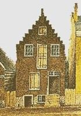

by
Stefan Bielinski
Spelled variously, the Albany Groesbecks were descended from Claes Jacobse and Elizabeth Stevens, his wife, who came to Beverwyck and were long-time residents of Albany. Their daughter, Barbara, became the wife of Gysbert Marselis about 1682. Their son, Stephanus, became a prominent Albany personage. In 1722, daughter, Catharina, married Pieter Schuyler, Jr.
The marriage of mainline trader Johannes Claese in 1699 produced a large family at least one of whom migrated north to the Albany farmland at Schaghticoke where subsequent generations flourished.
 In 1756, four Groesbeck-named households were listed on a census of Albany householders. By that time, the family had marked four generations of residence in the city
By the era of the American Revolution, a number of family members had become shoemakers who also worked tanning pits located along Foxes Creek.
In 1790, four Groesbeck households appeared on the Albany census in the second and third wards and four more in the town of Watervliet. By 1800, seven Groesbeck-named households were counted on the city census and three in Watervliet.
The first city directory in 1813, listed ten "Groesbeeck" addresses. They mostly were located in proximity to the house and store of Cornelius W. Groesbeck at 4 North Pearl and 319 North Market Streets respectively.
In 1874, the "Groesbeckville" portion of Bethlehem was annexed by the city of Albany. Today, the "South End/Groesbeckville Historic District" encompasses a good part of the old South End and is one of thirteen historic districts within the city of Albany.
Initially, the family appears to have been of germanic origins. Today, the Groesbeck family is found round the world. A number of places across the United States bear the name of this prominent early Albany family.
notes
The annotated bible of David Groesbeck appears online. Olive Tree Genealogy link. Wikipedia page on name origins.
Follow this link to more information on the Groesbeck family on this website. Sources: Our understanding of the Groesbeck family is derived chiefly from family and community-based resources.
Sources: Our understanding of the Groesbeck family is derived chiefly from family and community-based resources.
first posted: 3/10/04; last updated: 11/24/12